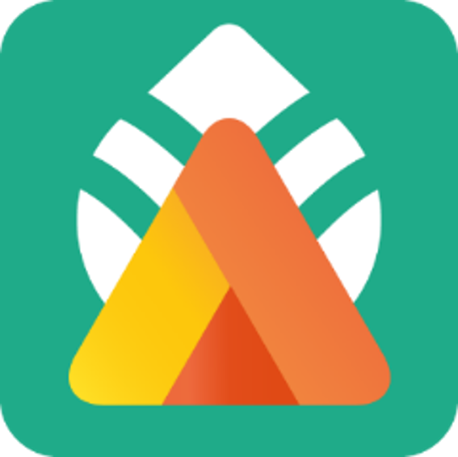

Production Period
2021.08.01 ~ 2021.08.31
Application UI/UX
Redesign & Develop
Team Project
(3 members)
About
차박,노지, 캠핑, 맛집 등을 직관적으로
빠르게 찾아볼 수 있다
Device
안드로이드 갤럭시 노트 10 (412 x 869)
My Role
- 니즈 조사
- 유사 어플 분석
- 참고 어플 디자인 리서치
- 캠핑 이용자들 리서치
- 무드보드 기반 이미지 수집
- 어플 내 아이콘 수집 및 제작
- 워크프레임과 프로토타입 제작 참여
- 발표를 위한 자료 제작
- 어플 디자인 보조
Project Process
- 캠핑 어플 ‘가자가자’를 선정 후 어플 분석.
- 유사 어플과 이용자들의 니즈를 바탕으로 개선사항 확인
- 국내 캠핑업계의 수요와 캠핑 이용자들, 캠핑 어플 사용자들의 연령대와 성비, 계층 분석 및 니즈와 목적 유추.
- 분석을 통한 타겟층과 페르소나 선정
- 자료를 기반으로 UI/UX workflow 작성
- 무드보드 & 스타일 가이드 제작
- 와이어프레임 제작
- 프로토타입 작업
Analysis
-
Weakness
- 불필요한 메뉴바
- 불필요한 숨김버튼
- 타 앱과 다른 기능을 가진 로고
- 구별하기 어려운 지도 마크
- UI에 맞지 않는 지도 리스트 순서
-
Needs
- 즐겨찾기 기능 확대
- 화장실 유무 외 다양한 정보 안내
- 캠핑장 리뷰 기능 추가
- 다양한 검색 방법
- 사용자에 따른 캠핑장 추전
Research
Reference
캠핑산업현황 통계조사 주요 내용 요약 https://blog.naver.com/kcci2020/221899161298
가치있는 관광데이터 같이누리는 관광지식 https://blog.naver.com/kcti0/222337098727
2019년_기준_캠핑관광_이용객_실태조사_보고서 https://kto.visitkorea.or.kr/viewer/view.kto?id=73339&type=bd
문화체육관광부(2020), 2019 국민여가활동조사.
- 2019년 기준 우리 국민 여과활동을 살펴보면, 휴가 중 가장 많이 한 여가활동으로 약 16.0%가 ‘캠핑’으로 응답할 정도로 높은 관심을 보이고 있음
- 캠핑을 가는 이유로 지인과의 시간을 보내기 위해 39.8%, 휴식을 취하기 위해 28.7%, 스트레스 감소를 위해 16.2%, 정서 안정을 위해 12.9% 로 나타남
- 캠핑을 가서 하는 활동으로 모닥불 놀이 60%, 휴식 60%로 대부분을 차지하며 이 두 자료를 통하여 업무 등으로 지친 사람들이 휴식을 취하고 싶어 캠핑을 가는 것을 알 수 있음.
- 2019년 이용자 연령대 비율은 20대 22.2%, 30대 27.7%, 40대 29.6%, 50대 17.7%, 60세 이상은 2.7%로 20~40대가 주를 이룸.
- 0대 21.0%, 화이트칼라 20.5%, 월 가구 소득 400만원 이상 19.6%로 30대/사무직/중위소득이 주로 캠핑을 이용.
60세 이상, 농업/임업/어업, 가정주부, 무직, 월 가구 소득 200만원 미만의 경우 캠핑을 거의 이용하지 않음. - 캠핑 동반자의 유형은 가족이 74%로 주를 이루고 친구 30%, 연인 16.9%, 혼자가 5.9%로 나타남(중복응답) 통계청에 따른 숙박관광 앱 사용자의 경우 20~30대 가 가장 높게 나타났으며, 직종은 전문 관리/기능 노무, 가구 소득의 경우 200만원 이상, 학력은 전문대/대학 재/졸업자 이상이 가장 높게 나타났다.
Reseacrh Result
많은 이용자들의 캠핑 목적은 가족들과 혹은 지인들과 시간을 보내기 위해서 이거나 휴식을 즐기기 위함이다.
캠핑장 주 이용층은 중위소득층의 20~30대 이며, 성비는 남성이 조금 높으나 큰 차이를 보이지는 않는다.
어플 이용자들의 나이 대 또한 20-30대가 주임으로 휴식과 가족과의 캠핑을 원하는 30대 가족을 메인 타겟으로 선정하였다.
Persona
김윤호 (38세)
- 직업
- 환경직 공무원
- 가족관계
- 배우자, 딸
- 연봉
- 연 3500만
- 가치관
- 가족과의 시간은 항상 소중한 법이다
- 성격
- 사교성이 좋고 활달함. 외부활동 즐겨함
- Needs
-
- 가족들과 도심 속이 아닌 자연에서 시간을 보내고 싶다.
- 가족들과 가는 캠핑이니 만큼, 후회 없는 캠핑을 다녀오고 싶다.
- 캠핑장의 정보를 한 군데서 빠르게 찾고 간단하게 예약할 수 있기를 원한다.
- 캠핑장을 다녀온 사람들의 후기를 확인할 수 있기를 원한다.
- 기술 숙련도
- 상
- 캠핑 숙련도
- 중
Layout
-
01
Concept
- Nature
- Enjoy
- Relax
-
02
Icon
- 
-
03
Colors
- main & secondary
-
04
Fonts
- 여기어때 잘난체
- Noto Sans KR
- Roboto
- 가자가자
- 즐거운 캠핑 속
- 새로운 휴식
UX vision
즐거운 캠핑 속 새로운 휴식
꽉 막힌 도심 속, 바쁜 업무에 지친 현대인들을 위한,
단조로운 일상에서 벗어난 새로운 휴식
UX flow
-
- 회원가입/ 로그인 사용자 설정
-
즐겨찾기
가능
-
-
동기
캠핑을 통해 가족과 함께하는 시간을 가지고 싶다. 반복되는 업무로 인한 스트레스를 해소하고 싶다
-
앱 실행
회원가입 혹은 로그인을 한다. 첫 로그인 시, 사용자 설정을 한다
-
즐겨찾기
마음에 드는 캠핑장을 즐겨찾기 한다
-
-
-
어플 발견
캠핑 관련 카페를 탐방하다가 더 효율적으로 캠핑장을 찾을 수 있는 어플을 발견한다
-
캠핑장 정보확인
추천 리스트를 보고 선택한 캠핑장의 상세 정보를 확인한다
-
정보공유
캠핑을 다녀온 후 후기를 작성한다.
-
-
- 추천리스트 키워드 검색 실제 정보
- 후기
높은 만족도
쾌적한 캠핑장에서 가족들과 새로운 추억을 쌓고 휴식을 취할 수 있었다
Review
uiux 디자인, xd, 팀 프로젝트 모두 처음이라 커뮤니케이션, 툴 사용, 개념의 이해 모두 어려웠다.
특히 uiux 디자인을 고려한 손쉬운 사용과 정보 전달은 결코 쉽지 않았다. 그럴때마다 ux 비전을 상기하며 방향성을 잃지 않기 위해 노력했다.
앱을 만들면서 여러 문제들을 직면하게 되었고 그럴때면 결국 구성원 모두가 노력해야 좋은 결과를 얻을 수 있다는 걸 알게 된 프로젝트였다.
아쉽지만 내가 포기해야 하는 부분, 상대방을 설득해야 하는 부분, 틀린 의견이 아닌 다른 의견이라는 것,각자 특화된 분야에 따라 일을 분담하고 서로를 존중해야 한다는 것. 이것을 배운 기회였다.